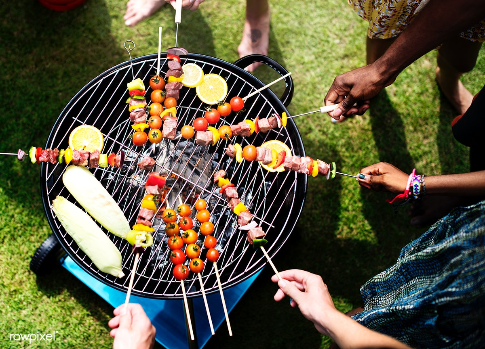

Sobotni grill rodzinny.
16.05.2019
Już 20 maja o godz 15:00, rozpocznie się pierwszy grill w tym sezonie! Serdecznie zapraszamy rodziny jak i osoby młode, chętne dobrze zjeść, potańczyć oraz pobawić się z okazji rozpoczęcie sezonów grillowych.
Na grillu będą sprzedawane różnorakie potrawy, a wstęp na grilla jest Bezpłatny!. Stawiamy na dobre jedzenie oraz świetną zabawę dla każdego. Dlatego też chcemy wszystkich serdecznie zaprosić na Otwarcie sezonu grillowego!
Podczas Grilla:
- Budki z jedzeniem na całym obszarze.- bezpłatne toalety dla gości
- Bezpłatny plac zabaw dla najmłodszych
- Zabawy z animatorami dla dzieci
- Budki z alkoholem.
- Granie na gitarze przy większym ognisku
- Strefa karaoke na wolnym powietrzu